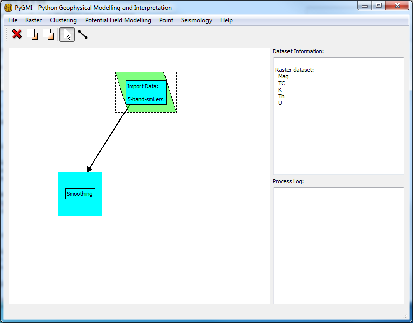

Quick Start to use PyGMI¶
Introduction¶
The new PyGMI interface allows for a flow chart approach to performing various geophysical tasks, of which only one of them is the modelling of potential field data in 3D.
Details¶
The menus in PyGMI group tasks into categories. By clicking on a menu item, you will see that the item appears as a flow chart element on the main interface.
{kind=link}
By clicking on the line connector icon on the menubar, it is possible to connect two tasks on the flow chart.
Double clicking on a task activates the task.
Right clicking on the task allows for the display of any data and results associated with that task.
Blue tasks still need to be activated
Green tasks have been activated and show a more complete context menu.
Red tasks are in the process of running.
Example¶
In the Raster menu click on ‘Import Raster Data’
Select a dataset to be imported
Right Click on the flow chart symbol which has appeared, and select ‘Show Raster Data’
A window should now pop up displaying the raster data which was imported. Close this window.
In the Raster menu click on ‘Smoothing’
Click on the Line Pointer tool on the menubar
Draw a line between the import symbol and the smoothing symbol. I line with an arrowhead should appear
Double-click on the smoothing symbol.
A dialog will pop up. You can leave the defaults for now and press ‘OK’
The process log will now turn red indicating that an activity is happening. Once it is complete it will turn right again.
Right click on the smoothing symbol and select ‘Show Raster Data’ to see the smoothing results.